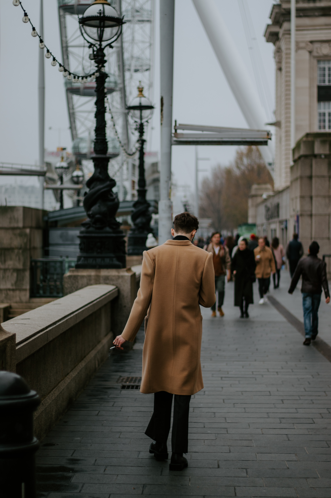
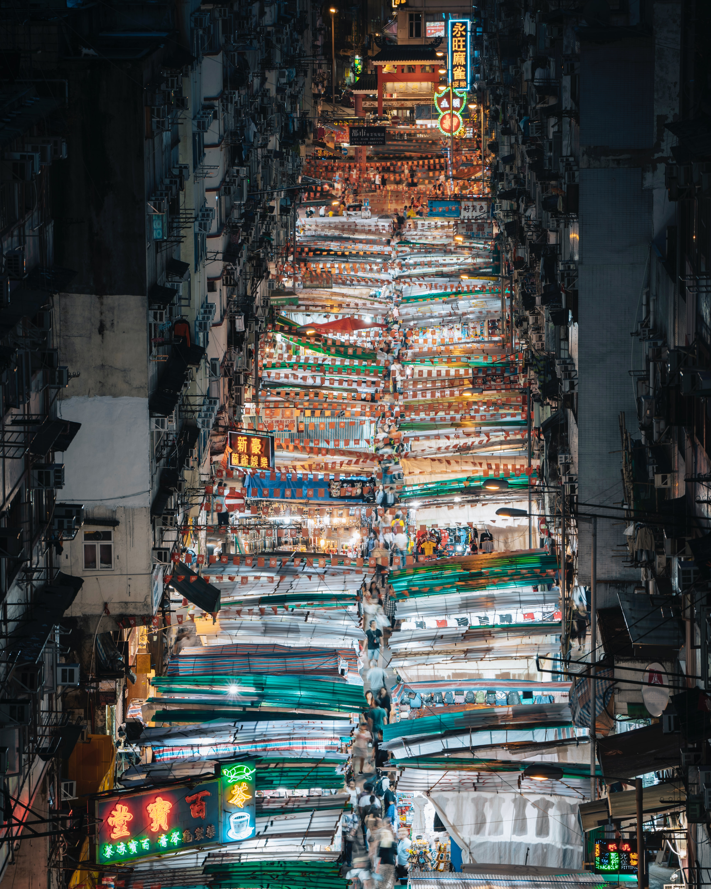
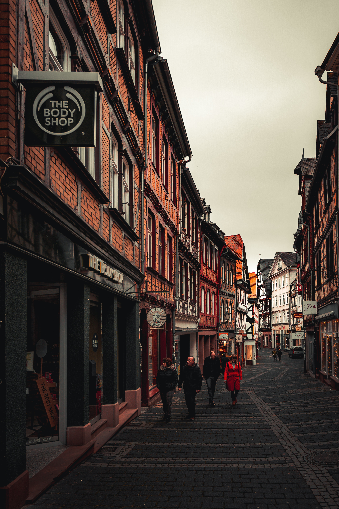

I grew up Los Angeles and has been traveling far from home and taking pictures ever since childhood. My parents owned a stock footage company and I accompanied them across the world with my camera to places as far flung as Bhutan, Tibet, Africa, Europe, and Indonesia..
I was previously the Deputy Photo Editor at Travel + Leisure Magazine in New York and a frequent contributor to the magazine. I have a Bachelor’s degree from Brown University and has studied at the International Center of Photography.
Street Photography



